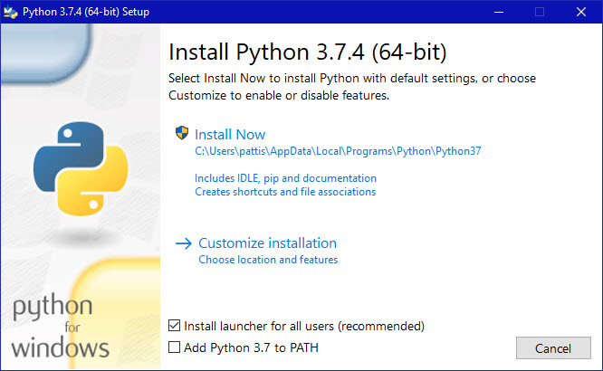

Set up Python and other Software Installaion
To get started working with Python 3, you’ll need to have access to the Python interpreter. There are
several common ways to accomplish this:
🖙
Python can be obtained from the Python Software Foundation
website at www.python.org.
Typically, that involves downloading
the appropriate installer for your operating system and running
it on your machine.
🖙
Some operating systems, notably Linux, provide a package
manager that can be run to install Python.
🖙
On macOS, the best way to install Python 3 involves installing a
package manager called Homebrew.
You’ll see how to do this in the relevant section in the tutorial.
🖙
On mobile operating systems like Android and iOS, you can install apps
that provide a Python programming environment.
This can be a great way to practice your coding skills on the go.
Note:
There is a chance that Python may have been shipped with
your operating system and is already installed. Even if
that is the case, it may be that the installed version
is outdated, in which case you
will want to obtain the latest version anyhow.
In this Python installation guide, you’ll see step by
step how to set up a working Python 3 distribution on
Windows,
macOS, Linux.
# Iterative Binary Search Function method Python Implementation
# It returns index of n in given list1 if present,
# else returns -1
if result != -1:
print("Element is present at index", str(result))
else:
print("Element is not present in list1")
Windows
It is highly unlikely that your Windows system shipped with Python already installed. Windows systems
typically do not.
Fortunately, installing does not involve much more than downloading the Python installer from the
python.org website and
running it. Let’s take a look at how to install Python 3 on Windows:
Step 1: Download the Python 3 Installer
1. Open a browser window and navigate to the Download page for Windows
at www.python.org.
2. Underneath the heading at the top that says Python Releases for Windows, click on the link for
the Latest Python 3
Release - Python 3.x.x. (As of this writing, the latest is Python 3.6.5.)
3. Scroll to the bottom and select either Windows x86-64 executable installer for 64-bit or Windows
x86 executable
installer for 32-bit. (See below.)
Sidebar: 32-bit or 64-bit Python?
For Windows, you can choose either the 32-bit or 64-bit installer. Here’s what the difference
between the two comes down
to:
1. If your system has a 32-bit processor, then you should choose the 32-bit installer.
2. On a 64-bit system, either installer will actually work for most purposes. The 32-bit version
will generally use less
memory, but the 64-bit version performs better for applications with intensive computation.
3. If you’re unsure which version to pick, go with the 64-bit version.
Note:
Remember that if you get this choice “wrong” and would like to switch to another version of Python, you can just uninstall Python and then re-install it by downloading another installer from python.org.
Step 2: Run the Installer
Once you have chosen and downloaded an installer, simply run it by double-clicking on the downloaded
file. A dialog
should appear that looks something like this:

Important:
You want to be sure to check the box that says Add Python 3.x to PATH as shown to ensure that the interpreter will be placed in your execution path. Then just click Install Now. That should be all there is to it. A few minutes later you should have a working Python 3 installation on your system.
Linux
There is a very good chance your Linux distribution has Python installed already, but it probably
won’t be the latest
version, and it may be Python 2 instead of Python 3.
To find out what version(s) you have, open a terminal window and try the following commands:
$ python --version
$ python2 --version
$ python3 --version
One or more of these commands should respond with a version, as below:
$ python3 --version
Python 3.6.5 or latest version
If the version shown is Python 2.x.x or a version of Python 3 that is not the latest (3.6.5 as of
this writing), then
you will want to install the latest version. The procedure for doing this will depend on the Linux
distribution you are
running.
macOS / Mac OS X While current versions of macOS (previously known as “Mac OS X”) include a version
of Python 2, it is
likely out of date by a few months. Also, this tutorial series uses Python 3, so let’s get you
upgraded to that.
The best way we found to install Python 3 on macOS is through the Homebrew package manager. This
approach is also
recommended by community guides like The Hitchhiker’s Guide to Python.
Step 1: Install Homebrew (Part 1)
To get started, you first want to install Homebrew:
Open a browser and navigate to http://brew.sh/. After
the page has finished loading, select the Homebrew bootstrap code
under “Install Homebrew”. Then hit Cmd+C to copy it to the clipboard. Make sure you’ve captured the
text of the complete
command because otherwise the installation will fail.
Now you need to open a Terminal.app window, paste the Homebrew bootstrap code, and then hit Enter.
This will begin the
Homebrew installation.
If you’re doing this on a fresh install of macOS, you may get a pop up alert asking you to install
Apple’s “command line
developer tools”. You’ll need those to continue with the installation, so please confirm the dialog
box by clicking on
“Install”.
At this point, you’re likely waiting for the command line developer tools to finish installing, and
that’s going to take
a few minutes. Time to grab a coffee or tea!
Step 2: Install Homebrew (Part 2)
You can continue installing Homebrew and then Python after the command line developer tools
installation is complete: Confirm the “The software was installed” dialog from the developer tools
installer. Back in the terminal, hit Enter to continue with the Homebrew installation.
Homebrew asks you to enter your password so it can finalize the installation. Enter your user
account password and hit
Enter to continue. Depending on your internet connection, Homebrew will take a few minutes to
download its required
files. Once the installation is complete, you’ll end up back at the command prompt in your terminal
window.
Whew! Now that the Homebrew package manager is set up, let’s continue on with installing Python 3 on
your system.
Step 3: Install Python
Once Homebrew has finished installing, return to your terminal and run the following command:
$ brew install python3
Note:
When you copy this command, be sure you don’t include the $ character at the beginning. That’s just
an indicator that
this is a console command.
This will download and install the latest version of Python. After the Homebrew brew install command
finishes, Python 3
should be installed on your system. You can make sure everything went correctly by testing if Python
can be accessed
from the terminal:
1. Open the terminal by launching Terminal.app.
2. Type pip3 and hit Enter.
3. You should see the help text from Python’s “Pip” package manager. If you get an error message
running pip3, go
through the Python install steps again to make sure you have a working Python installation.